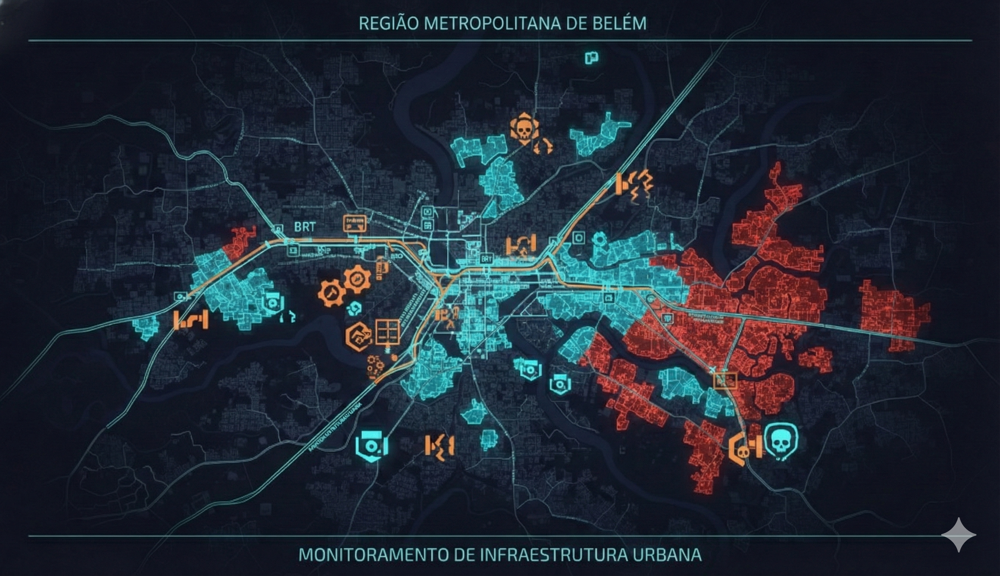

O Que as Manchetes Não Mostram
Enquanto Belém vira "vitrine climática", a realidade persiste a poucos metros dos holofotes.

Estruturas da COP30 dividem espaço com gestão de resíduos precária.

Obras de revitalização: infraestrutura chegando às comunidades.

"Justiça Climática Agora" — quem realmente vive a Amazônia cobra respostas.

Belém: Smart City ou Dois Mundos?
O mapa revela a geografia da desigualdade: áreas em ciano têm saneamento avançado — geralmente as regiões centrais e turísticas.
Áreas em vermelho indicam déficit de saneamento — majoritariamente periferias e baixadas.